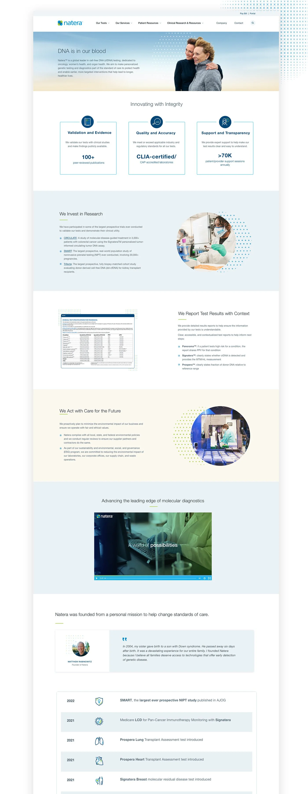

The visual system, site structure, and brand language behind Natera's marketing site rebuild — built to carry one brand voice across clinical and consumer audiences with very different needs.


Natera makes genetic testing products used across women's health, oncology, and organ health. Its marketing site has to serve three audiences at once: clinicians looking for clinical evidence to inform care, patients navigating a diagnosis, and a broader public learning about the company. The old site struggled with all three — an inconsistent look, a confusing structure, and a brand that didn't match the company's clinical authority.
The brief: rebuild the site, but more importantly rebuild the system underneath it — the templates, structure, brand language, and reusable patterns that could carry the new brand across hundreds of pages as Natera kept publishing.
The hard part of designing for biotech isn't the brand. It's building the system that lets one voice speak to a clinician on one page and a patient on the next.Notes from mapping the site

Before any visual work, we mapped the actual paths each audience took through the site. Two primary personas anchored the work — Dr. Amy, a physician searching for clinical evidence behind a test, and Rachel, a patient working through a diagnosis. We mapped their journeys separately, then reconciled them into a navigation that branches at the homepage and keeps the two audiences on separate paths.

We mapped each persona's journey separately — the questions they'd ask, the content they'd need, the steps to get from "I have a question" to "I have an answer or a next action."


Feedback from earlier user research grouped into five themes — navigation, product detail, resources, search and forms, and brand look and feel. Those themes became the checklist the new structure had to meet.

The new sitemap split the two audience paths right at the navigation and kept each product category on its own — so a clinician didn't have to wade through patient content (and vice versa) to find what they came for.

The visual system covered everything from page templates and component patterns to icons, charts, infographics, and brand language. The templates carried most of the work — ready-made page layouts the marketing team could pull from to keep making pages without breaking the look.

The visual language extended into a custom icon set, redesigned charts and infographics for clinical content, and a consistent treatment of complex data so technical pages read as part of the same brand as patient stories.
Alt text for every image, chart, and infographic for screen readers. Icons paired with text so navigation didn't depend on visual recognition. Contrast ratios verified on text and background pairings across the system. The brand had to be legible to every user, not just visual ones.
Women's Health, Oncology, and Organ Health — three product lines, each with their own clinical specifics, all carrying the same brand. The before-and-afters show the visual change clearly; the structure work underneath is what let it scale across hundreds of pages of clinical evidence and patient stories.
Before launch, we ran moderated usability tests with nine participants — physicians, genetic counselors, and patients, including one person who uses assistive technology. Each session ran 30 minutes, remote, in the US. We tested the new design against the same five themes from the start and used the results to refine the final build.
96% of participants rated the new design as intuitive and easy to navigate. 100% rated the brand as modern and trustworthy. We took the rest of the feedback — homepage clarity, clearer hover cues, redundant menus — into the launch revisions.
Launched January 2021. The system has scaled across hundreds of pages of clinical and consumer content in the years since — every new product launch, campaign landing page, and patient story built on the same foundation.